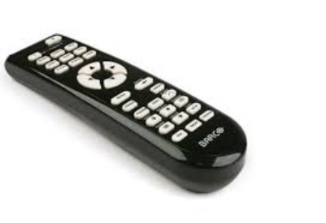

Want more control over things?
Yes please!
Oh we really want control. Can’t get enough, actually.
In fact, “out of control” is considered a bad thing. No control? No thanks.
We want to be the boss of health and money and the future. We want to manage what happens to our kids and to old folks and to property, countries, the planet. We want to rule death and thoughts and desires and enlightenment and feelings and even how deeply breath goes in and out of bodies.
We want to boss existence around.
Little ol’ us.
Sounds fun, right?
So what are the odds of success at this important responsibility?
Well considering the evidence, not too high. We don’t have anywhere near the kind of upper hand we want. I mean, even small bags of cookies have been known to dominate all-powerful us.
Luckily the desire for control might be worth a re-think anyway. Because what’s so great about being in charge?
The story usually told is that having control makes us feel better. When actually it’s the opposite.
Running the show is a fault-finding, blame inducing, failure-promising nightmare.
Try to control farts, burps, sleep and bodily functions- hello shame, addiction and frustration. Try to control the boss’s or clients’ opinions and choices- hello fear and inauthenticity. Try to control politics- hello fury, helplessness and despair. Try to control feelings, wants and thoughts- hello regret, guilt, and self hatred.
Oh boy.
Besides, if we were able to score the control we try so hard for, then guess whose fault it would be when things didn’t go right? Guess who blew it?
Yep we’re looking at you.
Ack.
Now of course no one ever has to stop trying to be in charge. No one ever has to stop trying to attain, or stop taking responsibility, or stop resisting what is.
But if it starts to feel like there’s more anger, guilt, shame, depression or failure than might be wanted, it could just be because we’re trying to take on jobs that aren’t ours.
And I don’t know why anyone would want to do that.
Because whatever does run things, whatever it is that sends hurricanes, unwanted reactions, sleeplessness, flu and empty bank accounts, apparently has its own ideas of what should or shouldn’t happen on this planet.
And maybe, just maybe, it knows more than we do.
So perhaps once in a while we could take a vacation from running things. Y’know, step aside and let existence be the boss it already is.
Perhaps once in a while we could sit in the passenger seat, enjoy being driven, take in all those just-happening happenings.
Embracing helplessness. Embracing powerlessness.
Seeing if they’re so gosh-darned awful.
Who knows? We might discover that simply being alive is more than enough.
Shocking? Perhaps.
And perhaps also relieving.
Maybe there's nothing more to do.
Maybe there's nothing more to say.
Maybe there’s nothing more to it than that.
Want Control?
